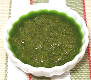

|
Pesto alla GenoveseItaly - Pesto alla Genovese | ||||
| Makes: Effort: Sched: DoAhead: |
1-1/4 cup ** 20 min Yes |
A classic Italian sauce for pasta and vegetables - wonderfully tasty. In Italy, pestos are also made with other greens, see our delicious Beet Greens Pesto. See also Serving. | |||
| Fortunately, modern machinery makes it possible to create pestos in your own home without a massive marble mortar and arms that could twist the turret off an Abrams tank. | |||||
|
|
3 1/4 3 2 1/2 |
T c cl c c |
Pine Nuts (1) Parmesan cheese (2) Garlic Basil Leaves (3) Olive Oil ExtV. |
Make A mini-prep food processor is perfect for this.
|